Project 4
Part A: Image Warping and Mosaicing
In this project I stitch photographs into mosaics by recovering projective transforms (homographies) between views, warping images into a shared coordinate frame, and blending the overlap. Part A is fully manual: I pick correspondences myself. Part B will automate that correspondence step.
A.1 Shoot the Pictures
I captured overlapping photos with a (roughly) fixed center of projection, rotating the camera between shots so the motion is projective. I aimed for substantial overlap (around half the field of view) and took each pair in quick succession so lighting and scene content stayed stable. Below are the image sets used for mosaicing.
Set 1: Indoor room
A panorama of my room. The doors, shelves, and hanging clothes give plenty of distinctive corners for manual correspondences.
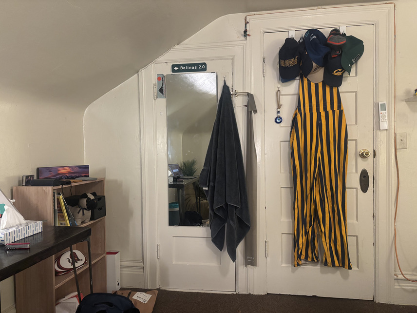
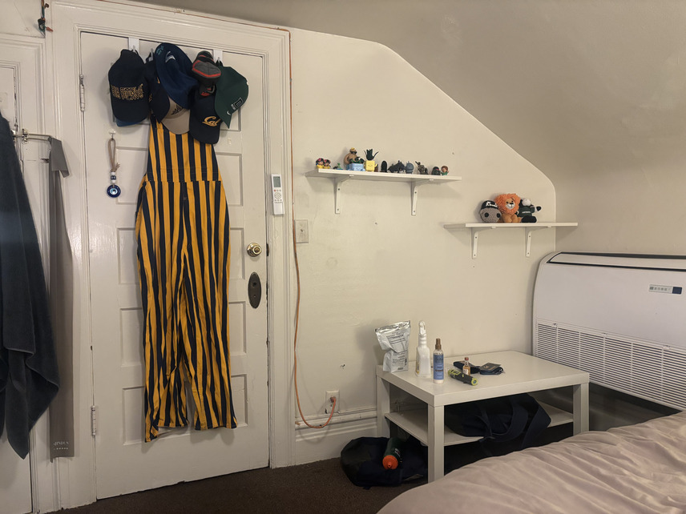
Set 2: Outdoor campus
The Valley Life Sciences Building and adjacent lawn on campus. In the automatic correspondence part of the project, these images may be tough to work with because of the lack of obvious corners. Using manual correspondences, however, it was easy enough to use the corners of shadows, light posts, and tree tops.
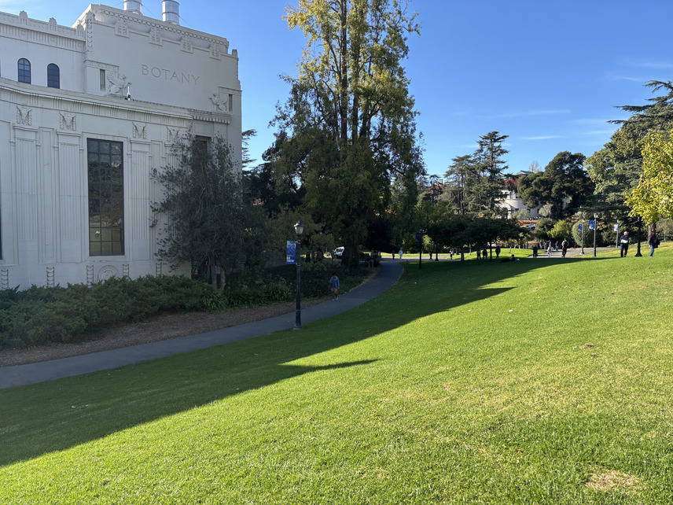
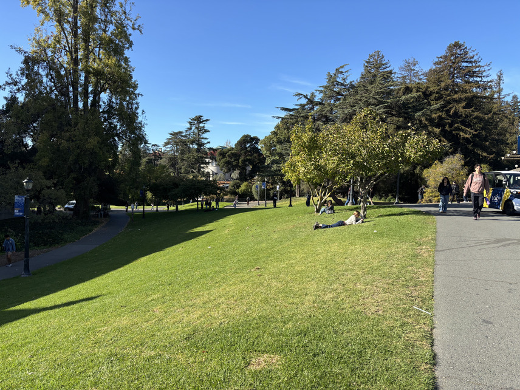
Set 3: House
The outside of my house, shot from the same center of projection with a vertical rotation.
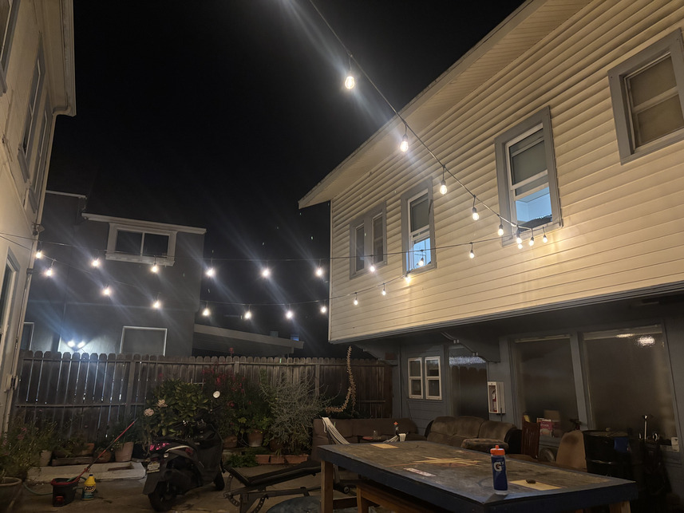
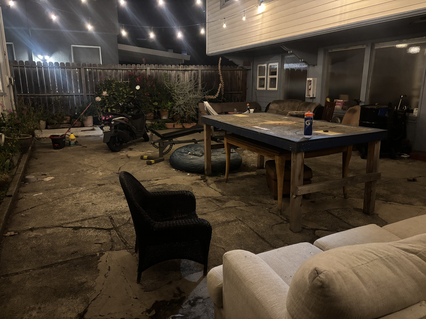
A.2 Recover Homographies
To find our homography matrix, we are searching for some $3 \times 3$ matrix $H$ where every input point maps to its corresponding output point:
$$ \begin{bmatrix} w x' \\ w y' \\ w \end{bmatrix} = H \begin{bmatrix} x \\ y \\ 1 \end{bmatrix} $$If $H$ looks like
$$ H = \begin{bmatrix} a & b & c \\ d & e & f \\ g & h & 1 \end{bmatrix} $$we have the system of equations
$$ \begin{aligned} w x' &= a x + b y + c \\ w y' &= d x + e y + f \\ w &= g x + h y + 1 \end{aligned} $$or, equivalently,
$$ \begin{aligned} x' &= \frac{a x + b y + c}{g x + h y + 1} \\[0.5em] y' &= \frac{d x + e y + f}{g x + h y + 1} \end{aligned} $$With some arithmetic, we can rewrite this as
$$ \begin{aligned} x' &= a x + b y + c - g x x' - h y x' \\ y' &= d x + e y + f - g x y' - h y y' \end{aligned} $$For each $x$-coordinate correspondence, we can then solve
$$ \begin{bmatrix} x & y & 1 & 0 & 0 & 0 & -x x' & -y x' \end{bmatrix} \begin{bmatrix} a \\ b \\ c \\ d \\ e \\ f \\ g \\ h \end{bmatrix} = x' $$and for each $y$-coordinate correspondence
$$ \begin{bmatrix} 0 & 0 & 0 & x & y & 1 & -x y' & -y y' \end{bmatrix} \begin{bmatrix} a \\ b \\ c \\ d \\ e \\ f \\ g \\ h \end{bmatrix} = y' $$For multiple points we can then solve the matrix equation
$$ \begin{bmatrix} x_1 & y_1 & 1 & 0 & 0 & 0 & -x_1 x'_1 & -y_1 x'_1 \\ 0 & 0 & 0 & x_1 & y_1 & 1 & -x_1 y'_1 & -y_1 y'_1 \\ \vdots & \vdots & \vdots & \vdots & \vdots & \vdots & \vdots & \vdots \\ x_n & y_n & 1 & 0 & 0 & 0 & -x_n x'_n & -y_n x'_n \\ 0 & 0 & 0 & x_n & y_n & 1 & -x_n y'_n & -y_n y'_n \end{bmatrix} \begin{bmatrix} a \\ b \\ c \\ d \\ e \\ f \\ g \\ h \end{bmatrix} = \begin{bmatrix} x'_1 \\ y'_1 \\ \vdots \\ x'_n \\ y'_n \end{bmatrix} $$Let's look at an example on some of the images that are linked via projective transform. For these two images, we can take the following points that appear in both images to define a correspondence. Note that since there are 8 corresponding points, the above strategy will produce 16 equations in order to solve for only 8 unknowns. As a result, we use the least squares solution, which produces a more stable result than exactly calculating a homography on only 4 correspondences (8 equations).
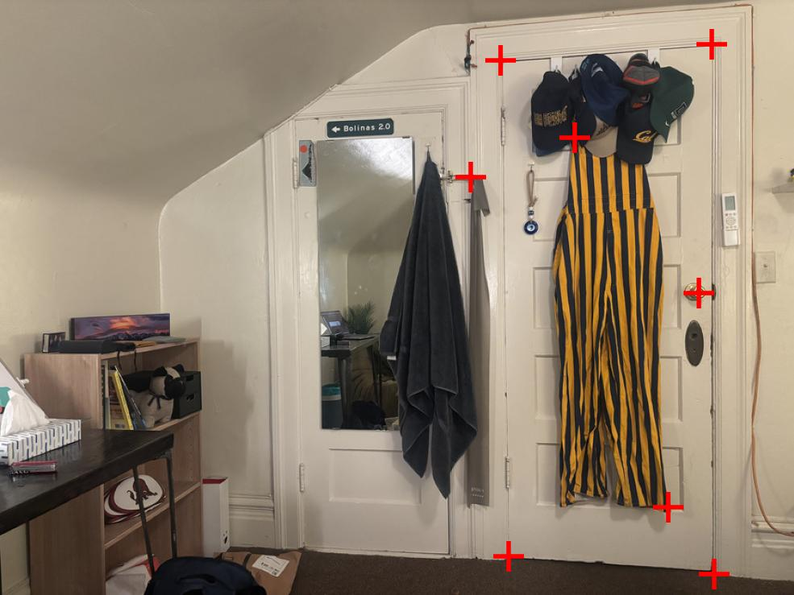
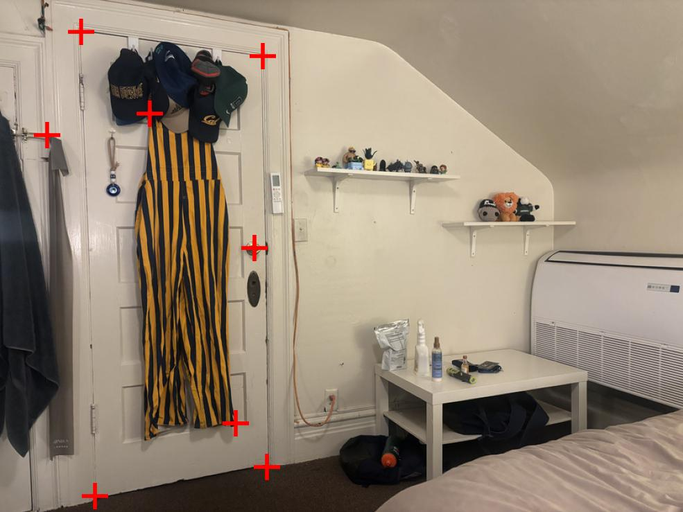
Points
Left image:
1: (542.143, 66.201)
2: (766.218, 45.357)
3: (549.959, 601.201)
4: (768.823, 619.440)
5: (620.308, 156.526)
6: (722.792, 552.565)
7: (751.453, 316.331)
8: (508.271, 192.135)
Right image:
1: (100.942, 39.278)
2: (325.016, 70.544)
3: (121.786, 623.782)
4: (335.438, 583.831)
5: (189.529, 143.498)
6: (297.224, 532.589)
7: (316.331, 307.646)
8: ( 58.385, 168.685)System of equations
A =
[[ 100.942, 39.278, 1.000, 0.000, 0.000, 0.000, -54724.745, -21294.069],
[ 0.000, 0.000, 0.000, 100.942, 39.278, 1.000, -6682.462, -2600.228],
[ 325.016, 70.544, 1.000, 0.000, 0.000, 0.000, -249033.137, -54051.920],
[ 0.000, 0.000, 0.000, 325.016, 70.544, 1.000, -14741.808, -3199.667],
[ 121.786, 623.782, 1.000, 0.000, 0.000, 0.000, -66977.200, -343055.041],
[ 0.000, 0.000, 0.000, 121.786, 623.782, 1.000, -73217.730, -375018.830],
[ 335.438, 583.831, 1.000, 0.000, 0.000, 0.000, -257892.707, -448862.861],
[ 0.000, 0.000, 0.000, 335.438, 583.831, 1.000, -207783.886, -361648.341],
[ 189.529, 143.498, 1.000, 0.000, 0.000, 0.000, -117566.576, -89013.254],
[ 0.000, 0.000, 0.000, 189.529, 143.498, 1.000, -29666.246, -22461.223],
[ 297.224, 532.589, 1.000, 0.000, 0.000, 0.000, -214831.210, -384951.386],
[ 0.000, 0.000, 0.000, 297.224, 532.589, 1.000, -164235.575, -294290.164],
[ 316.331, 307.646, 1.000, 0.000, 0.000, 0.000, -237707.981, -231181.564],
[ 0.000, 0.000, 0.000, 316.331, 307.646, 1.000, -100065.408, -97318.052],
[ 58.385, 168.685, 1.000, 0.000, 0.000, 0.000, -29675.276, -85737.744],
[ 0.000, 0.000, 0.000, 58.385, 168.685, 1.000, -11217.737, -32410.261]]
b =
[542.143, 66.201, 766.218, 45.357, 549.959, 601.201, 768.823, 619.440,
620.308, 156.526, 722.792, 552.565, 751.453, 316.331, 508.271, 192.135]
542.143 = (100.942)a + (39.278)b + (1.000)c + (0.000)d + (0.000)e + (0.000)f + (-54724.745)g + (-21294.069)h
66.201 = (0.000)a + (0.000)b + (0.000)c + (100.942)d + (39.278)e + (1.000)f + (-6682.462)g + (-2600.228)h
766.218 = (325.016)a + (70.544)b + (1.000)c + (0.000)d + (0.000)e + (0.000)f + (-249033.137)g + (-54051.920)h
45.357 = (0.000)a + (0.000)b + (0.000)c + (325.016)d + (70.544)e + (1.000)f + (-14741.808)g + (-3199.667)h
549.959 = (121.786)a + (623.782)b + (1.000)c + (0.000)d + (0.000)e + (0.000)f + (-66977.200)g + (-343055.041)h
601.201 = (0.000)a + (0.000)b + (0.000)c + (121.786)d + (623.782)e + (1.000)f + (-73217.730)g + (-375018.830)h
768.823 = (335.438)a + (583.831)b + (1.000)c + (0.000)d + (0.000)e + (0.000)f + (-257892.707)g + (-448862.861)h
619.440 = (0.000)a + (0.000)b + (0.000)c + (335.438)d + (583.831)e + (1.000)f + (-207783.886)g + (-361648.341)h
620.308 = (189.529)a + (143.498)b + (1.000)c + (0.000)d + (0.000)e + (0.000)f + (-117566.576)g + (-89013.254)h
156.526 = (0.000)a + (0.000)b + (0.000)c + (189.529)d + (143.498)e + (1.000)f + (-29666.246)g + (-22461.223)h
722.792 = (297.224)a + (532.589)b + (1.000)c + (0.000)d + (0.000)e + (0.000)f + (-214831.210)g + (-384951.386)h
552.565 = (0.000)a + (0.000)b + (0.000)c + (297.224)d + (532.589)e + (1.000)f + (-164235.575)g + (-294290.164)h
751.453 = (316.331)a + (307.646)b + (1.000)c + (0.000)d + (0.000)e + (0.000)f + (-237707.981)g + (-231181.564)h
316.331 = (0.000)a + (0.000)b + (0.000)c + (316.331)d + (307.646)e + (1.000)f + (-100065.408)g + (-97318.052)h
508.271 = (58.385)a + (168.685)b + (1.000)c + (0.000)d + (0.000)e + (0.000)f + (-29675.276)g + (-85737.744)h
192.135 = (0.000)a + (0.000)b + (0.000)c + (58.385)d + (168.685)e + (1.000)f + (-11217.737)g + (-32410.261)hH
H =
[[ 0.344, 0.014, 465.808],
[-0.243, 0.863, 53.583],
[-0.001, 0.000, 1.000]]A.3 Warp the Images
To warp an image using H, we multiply every pixel by H to find its corresponding pixel in the output. These output destinations sometimes do not fall cleanly onto new pixel locations. For example, some input pixels may map between two pixels, or two inputs may map to the same output destination. That can leave holes in the output where no input pixel was mapped. To counter this, we use inverse mapping. This means that for every destination pixel, we apply H−1 to find the corresponding source location, then interpolate. We can estimate the size and shape of the output canvas by first forward mapping the four source corners through H, then inverse mapping every pixel within these output corners.
When output pixels don't map cleanly to input pixels, interpolation is needed. For this project, I implemented two interpolation techniques. The first is nearest-neighbor interpolation: when an output pixel maps between multiple input pixels, it receives the value of the closest neighbor. Bilinear interpolation, on the other hand, takes a weighted average of the surrounding input pixels, weighted by how close the mapped location is to each.
Here, I use inverse mapping with both nearest-neighbor and bilinear interpolation to rectify images. Image rectification uses homographies to transform input images onto a given plane. To show how powerful this is, I've rectified images with known square or rectangular objects onto a plane where the camera looks at them orthogonally. To do this, I computed H using the four corners of the rectangular object (selected by hand) as input points (x and y) and four hard-coded rectangular points as the output points (x' and y'). The first two images have been cropped to just show the rectified portion while the last is shown in its entirety to show how this process distorts the rest of the image.
Hallway
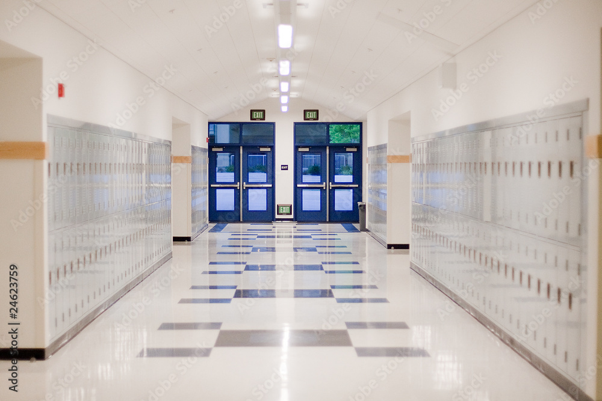
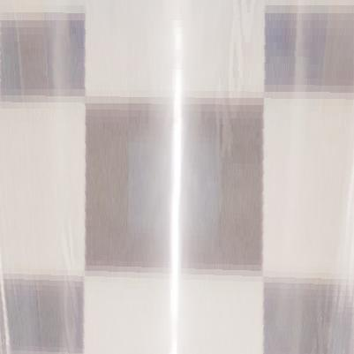
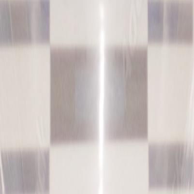
Mona Lisa
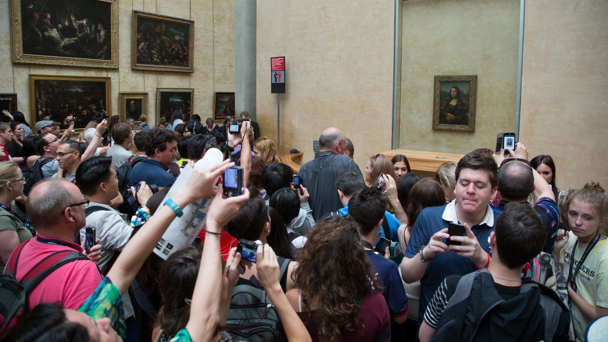
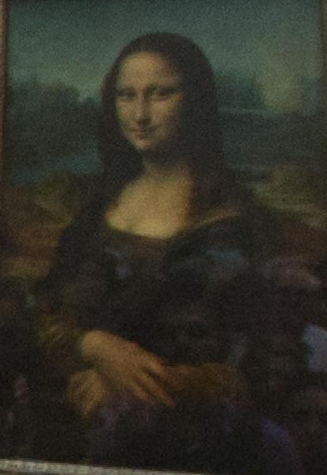
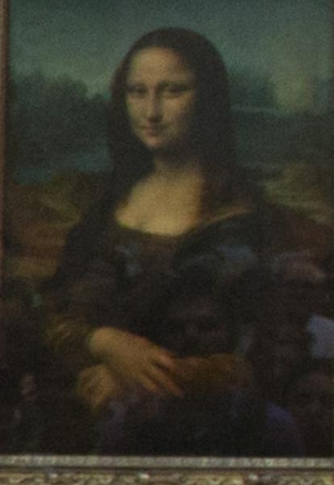
Building

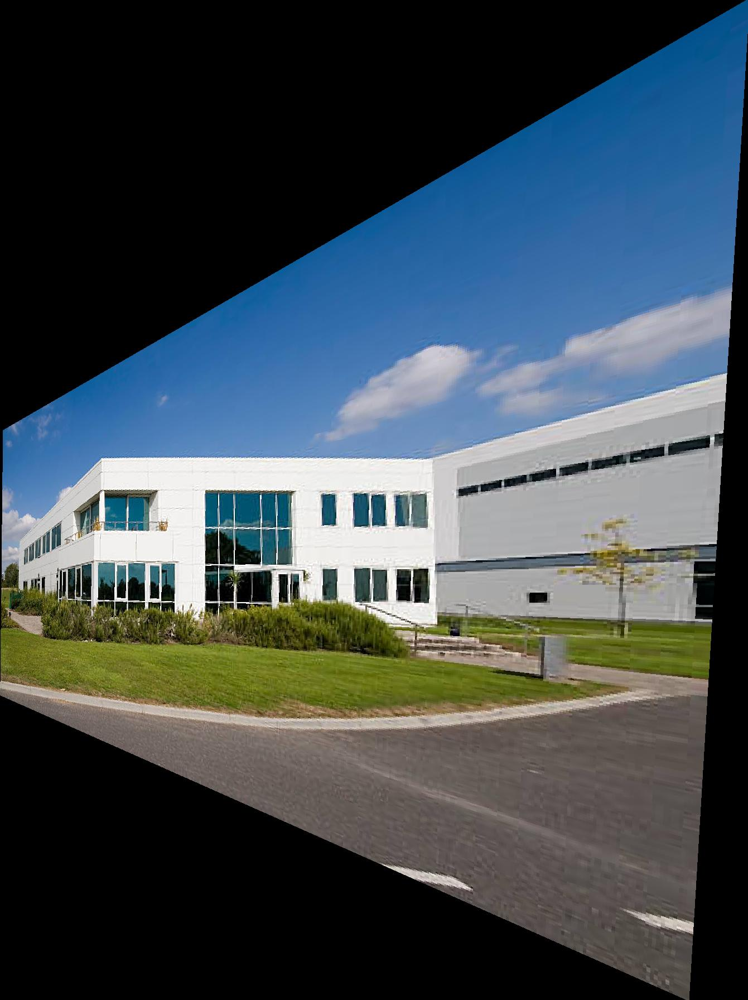
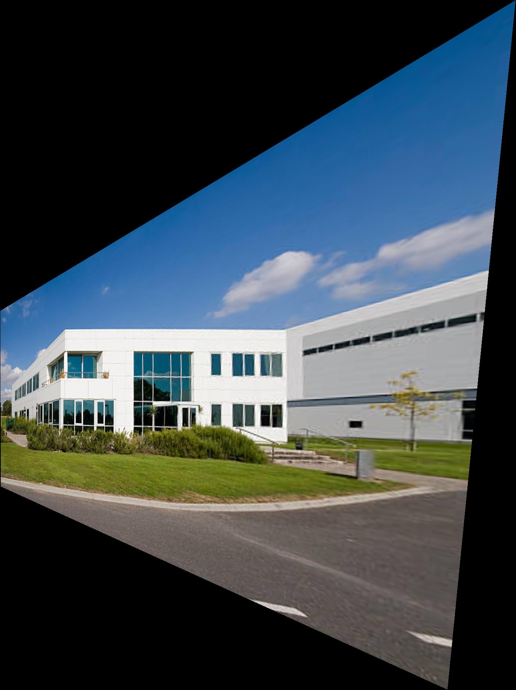
Nearest neighbor is cheaper but introduces jagged artifacts under strong warps. The doubles of certain tiles in the first image are an example of that. Bilinear averages the four surrounding source pixels, which softens those edges and generally looks better for both rectification and mosaicing, at an extra cost. Since the only extra cost to bilinear comes in the interpolation phase and does not affect the more expensive actual computing of H, this is generally a modest extra cost.
A.4 Blend Images into a Mosaic
To build a mosaic I leave one image as the reference and warp the other to fit it. All images are warped onto a shared canvas sized to the union of their projected bounding boxes. To reduce edge artifacts like abrupt cutoffs or ghosting at the point where images meet, I give each pixel in each image a weight. The weight is 1 at the center of each image and linearly decreases to zero by the edges. The weights of pixels in warped images come from the weights of their corresponding input pixels. In the final mosaic, each pixel is a weighted average of the corresponding pixels from the two images (one of which is already warped to fit the other).
Mosaic 1: Indoor room
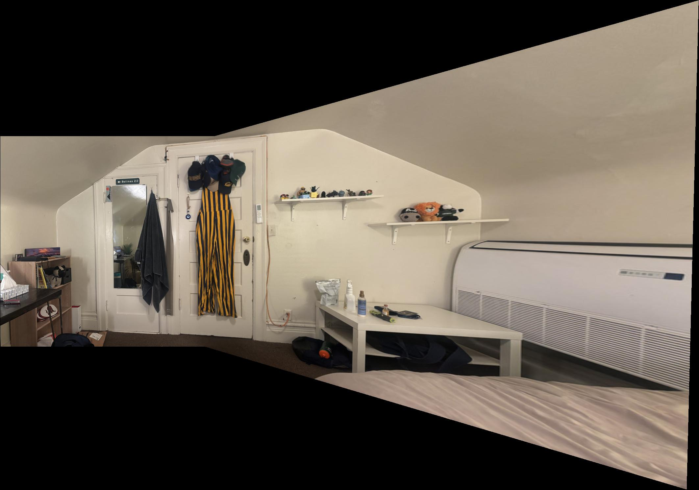
Mosaic 2: Outdoor campus
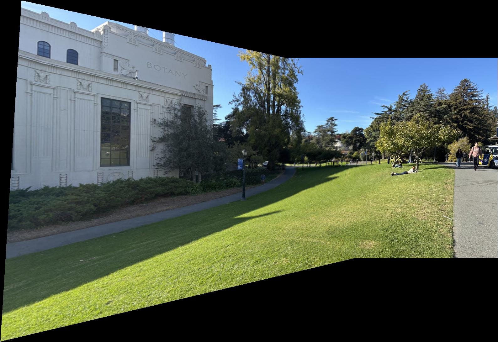
Mosaic 3: House
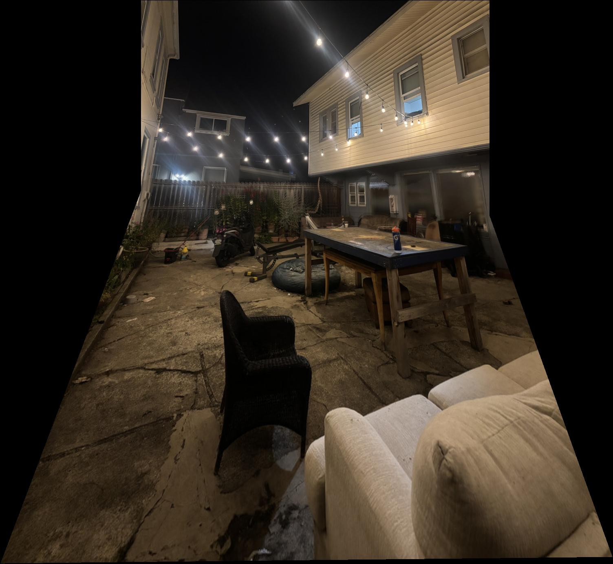
But wait, this image doesn't look as clean. In the area where the two images overlap, there is clear ghosting. It is especially clear with the bushes in the back, which appear to have doubles. To fix this, we may need to use a more sophisticated image blending technique between the two images. We can revisit Laplacian Blending, our old friend from Project 2! This is done by splitting each image into high-pass and low-pass versions and combining them differently. For the high-pass images, I use a hard border: each pixel comes from whichever input has the higher weight. For the low-pass images, I still use a weighted average of the feather weights, but those weights are blurred with the same filter used on the images. Adding the high-pass and low-pass blends gives the final mosaic.
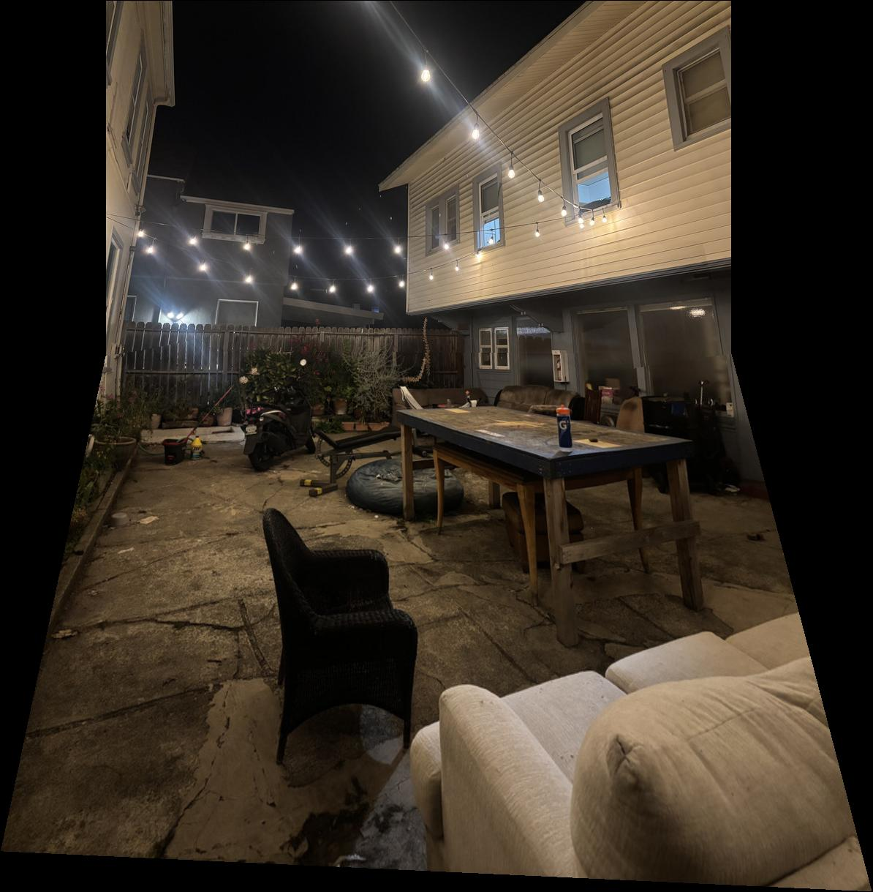